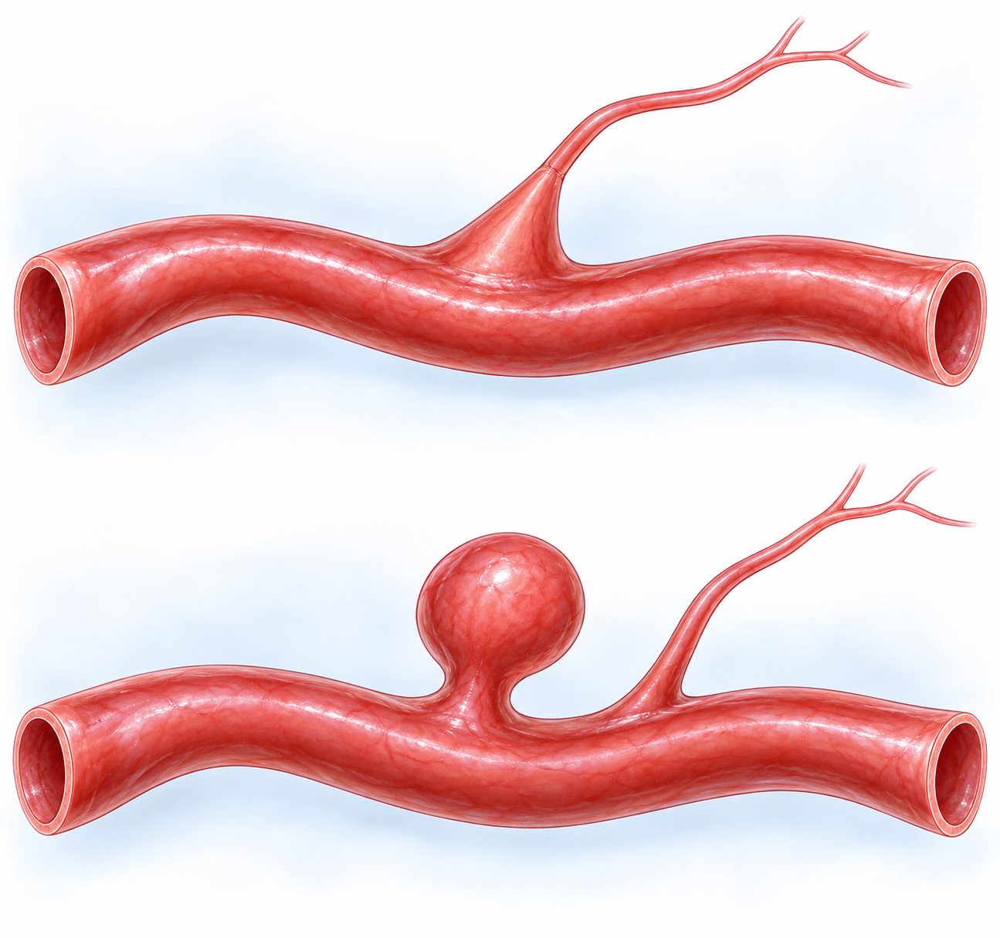
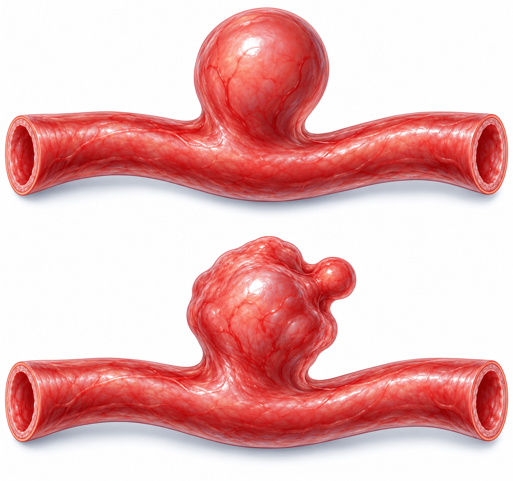
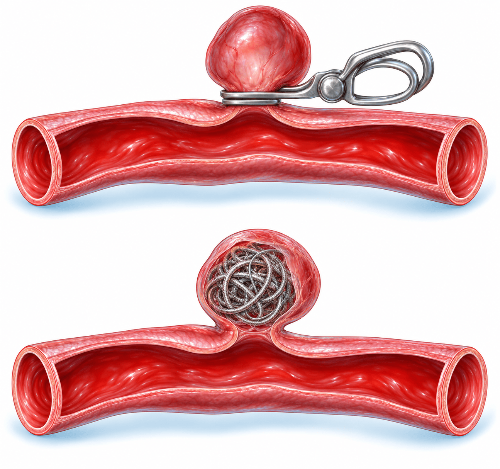

검진 비파열성 뇌동맥류
위험 평가와 강의 근거 점검
자연경과·병변 위험도·영상 추적·치료 선택과 내과의 역할

DETECTION · 검진에서의 발견
흔한 무증상 발견 소견에서 위험도를 나눈다
검진 MRA의 보급으로 소형 비파열성 뇌동맥류 발견이 증가
2~5%
일반 성인 유병률
강의가 소개한 일반 성인 인구의 보고 범위
<5mm
검진 병변의 대다수
무증상 소형 병변을 발견하는 경우가 많다
MRA
주요 발견 수단
비침습적 MR angiography
주요 발생 부위
Willis 환을 중심으로 ICA·MCA·ACA/ACoA·PCoA 등에 분포한다. 크기와 위치를 진료의 출발점으로 삼는다.
설명의 방향
진단 즉시 모두 치료하기보다 파열 위험과 치료 위험을 함께 본다. 소형·무증상 병변에서는 위험인자 교정과 정기 추적을 연결한다.
DIFFERENTIAL · 혈관 변이
Infundibulum은 분지 정점의 혈관을 본다
깔때기 확장(junctional dilatation)과 주머니형 병변을 감별

형태·크기·분지
Infundibulum은 주로 교통동맥 기시부의 원뿔·깔때기 모양 확장으로, 강의에서는 ≤3mm로 설명했다. 팽대 정점에서 정상 미세 혈관이 분지하는지가 핵심이다.
임상적 의미
주머니처럼 돌출된 진성 동맥류와 구별한다. 연자는 정상 해부학적 변이로 설명하며 치료보다 추적을 제시했고, 혈관 CT로 분지를 더 명확히 볼 수 있다고 했다.
LOCATION · 초진의 실제
경막과 분지 위치를 크기와 함께 해석한다
초진에는 위험성이 낮은 병변도 상당수 포함된다
 Cavernous aneurysm
Cavernous aneurysm해면정맥동 분절은 경막외에 위치한다.
연자는 파열하더라도 지주막하 출혈보다는 해면정맥동 내 누공을 형성하는 경우가 대부분이라고 설명했다.
Paraclinoid aneurysm 연자는 작은 상돌기 주위 병변을 저위험 소견의 예로 들었다.
위치 이름만으로 결론 내리지 않고 크기·모양·증상을 함께 평가한다.
Junctional dilatation 혈관 기시부의 정상 확장을 진성 동맥류와 구별한다.
초진 진단명이나 판독지의 의증만으로 즉시 치료를 정하지 않는다.
RISK FACTORS · 형성과 파열
바꿀 수 있는 인자와 선별검사 인자를 구분한다
흡연·고혈압은 동맥류 형성과 파열 모두에 연결된다
흡연·고혈압
흡연은 강의에서 형성·파열을 2~3배 높이는 강력한 위험인자로 소개되었다. 고혈압은 혈관벽의 혈역학적 스트레스를 가중시킨다.
과음·교감신경 자극제 과도한 음주와 코카인 등 교감신경 자극제 사용을 파열 유발 인자로 설명했다. 생활습관 문진과 교정을 연결한다.
여성·고령·가족력
파열의 Relative risk(RR)는 여성 1.6, ≥60세 2.0, 일본·핀란드계 3.4로 소개되었다. 1차 친족 가족력은 선별검사에 연결한다.
ADPKD·결합조직 질환
상염색체 우성 다낭신과 Ehlers-Danlos·Marfan 등 결합조직 질환을 선별검사 고려 대상에 포함했다.
EVIDENCE · 지표의 의미
형성·파열과 OR·HR·RR을 구분해 읽는다
강의의 위험인자 종합표 · 각 연구의 대상과 지표를 보존
| 위험인자 | 추정치 (95% CI) | 대상 · 지표 |
|---|
| 현재 흡연 | 2.44 (1.02~5.88)
1.34 (1.07~1.67) | 파열 · Hazard ratio(HR)
형성 · Odds ratio(OR) |
|---|
| 고혈압 | 1.72 (1.42~2.09) | 형성 · Odds ratio(OR) |
|---|
| 크기 ≥7mm | 2.60 (1.13~5.98) | 파열 · Hazard ratio(HR) |
|---|
| 대형 동맥류 | 4.49 (2.46~8.17) | 파열 · Odds ratio(OR) |
|---|
| 후방순환 위치 | 2.5 (1.6~4.1) | 파열 · Relative risk(RR) |
|---|
NATURAL HISTORY · 전체와 소형
파열 위험은 크기·위치에 따라 다르다
강의가 제시한 자연경과 · 전체 평균을 개인 위험과 동일시하지 않는다
<1% / 연
전체 평균 연간 파열률강의 소개 · ISUIA
0.1~0.5% / 연
5mm 미만 소형 동맥류강의에서 소개한 연간 파열률 범위
개인 위험도와 연결
소형·전방순환의 위험은 낮은 편이다. 크기 증가, 후방순환·교통동맥 위치, 증상성 여부를 함께 판단한다. 전체 평균을 개인 위험과 동일시하지 않는다.
UCAS JAPAN · 크기별 자연경과
크기에 따라 연간 파열률의 차이가 커진다
교재에 소개된 6,697개 동맥류 · 11,660 aneurysm-years
| 크기 | 연간 파열률 | Hazard ratio(HR), 95% CI |
|---|
| 3~4mm | 0.36% | 1.00 (기준) |
|---|
| 5~6mm | 0.50% | 1.13 (0.58~2.22) |
|---|
| 7~9mm | 1.69% | 3.35 (1.87~6.00) |
|---|
| 10~24mm | 4.37% | 9.09 (5.25~15.74) |
|---|
| ≥25mm | 33.4% | 76.26 (32.76~177.54) |
|---|
전체 연간 파열률 0.95% (95% CI 0.79~1.15) · 강의 소개: UCAS Japan
UCAS JAPAN · 위치와 모양
교통동맥 위치와 daughter sac을 함께 본다
중대뇌동맥을 기준으로 비교한 강의의 다변량 분석 수치
PCoA 후교통동맥의 Hazard ratio(HR)는 1.90 (95% CI 1.12~3.21). 중대뇌동맥(MCA)을 기준으로 위험이 높게 제시되었다.
ACoA 전교통동맥의 Hazard ratio(HR)는 2.02 (95% CI 1.13~3.58). 전방순환이라는 큰 범주 안에서도 위치 차이를 본다.
Daughter sac Daughter sac 동반 시 Hazard ratio(HR)는 1.63 (95% CI 1.08~2.48). 크기뿐 아니라 불규칙한 형태가 핵심 요인이다.
MORPHOLOGY · 형태 변화
작은 병변에서도 새 돌출과 불규칙성을 살핀다
Daughter sac · bleb · lobulation · irregular wall

모양의 의미
둥근 주머니에 돌출이 더 생기거나 벽이 불규칙해지는 형태를 혈류역학적 불안정 신호로 소개했다. 크기가 작더라도 모양을 함께 본다.
추적에서 보는 변화
이전 영상과 크기·모양을 대조한다. MRA에서 형태 변화나 새로운 돌출이 생기면 치료 여부를 재평가하는 경로로 연결한다.
ISUIA · 크기와 위치
저위험·고위험 구분은 치료 판단의 출발점이다
강의의 크기·위치 중심 분류
낮은 파열 위험
ISUIA에서 <7mm·전방순환의 5년 파열률은 약 0%에 가까운 수준으로 소개되었다.
무증상 소형 병변은 추적 관찰이 우선이다.
위험을 높이는 병변 ≥7mm, 후방순환, 뇌신경 마비를 동반한 PCoA 동맥류를 고위험 예로 제시했다.
크기가 커질수록 위험이 증가한다.
개인별 종합 판단
연령·기대수명, 증상, 형태, 지주막하 출혈 병력과 치료 위험을 함께 고려한다.
분류를 환자 개인의 결론으로 바로 바꾸지 않는다.
RISK–BENEFIT · 치료의 균형
치료 이득은 연령·증상·형태와 함께 달라진다
강의의 PHASES score 소개와 환자별 위험–이득 판단
누적 파열 위험 ↔ 치료 위험
고령에서는 치료 합병증 위험이 남은 기간의 파열 위험보다 클 수 있다.
젊은 환자에서는 앞으로의 누적 파열 위험을 고려하여 더 적극적으로 치료를 고민한다고 설명했다.
증상·형태와 PHASES score
뇌신경 마비나 극심한 국소 두통을 유발하는 증상성 병변은 크기와 무관하게 치료 대상으로 설명했다.
PHASES score를 종합 위험도 평가와 치료 결정에 활용한다고 소개했다.
크기 · 고혈압 · 연령 · 출혈 관련 병력 · 위치 · 인종 등 환자 요인을 통합한다
TREATMENT FRAME · 강의 소개 기준
증상성·고위험 병변과 관찰 대상을 구분한다
강의가 소개한 AHA/ASA 2015 기준과 국내 접근
| 범주 | 강의가 제시한 기준 | 진료 방향 |
|---|
| Class I | 증상이 있는 비파열성 동맥류 | 크기에 관계없이 치료 권고 |
|---|
| Class IIa | 전방순환 ≥7mm / 후방순환 ≥6mm | 치료 고려 |
|---|
| Class III | <7mm·전방순환·이전 SAH 없음 | 무증상이면 보존적 관찰 |
|---|
| 국내 접근 | 5~7mm 이상 또는 후방순환 등 | 신경외과 협진을 통한 개별화 |
|---|
이 표는 연자가 강의에서 소개한 기준을 정리한 것이다
PATIENT EXPLANATION · 과잉 치료 예방
낮은 파열 위험과 치료 합병증을 함께 설명한다
불안 완화와 위험–이득 논의가 일차 진료의 역할
정상 변이 감별 Infundibulum은 진성 동맥류와 구분한다.
작은 혈관 돌출이라는 판독 소견 자체를 바로 치료 필요성과 연결하지 않는다.
영구 신경학적 합병증 연자는 낮은 위험의 동맥류 치료에 따르는 영구적 신경학적 합병증 발생률을 1~2%로 설명했다.
파열 위험과 같은 맥락에서 비교해야 한다.
진료 설명의 목표 상당수는 추적으로 지낼 수 있다는 사실을 설명하고 과도한 공포를 줄인다.
불필요한 치료로 생길 수 있는 위해도 함께 논의한다.
RISK MANAGEMENT · 내과의 역할
혈압 조절과 금연을 적극적으로 연결한다
교정 가능한 위험인자 관리가 파열 예방의 출발점
혈압 목표
교재는 <130/80mmHg를 목표로 제시했다. 연자는 외래에서 수축기 130·이완기 80 정도를 목표로 적극 관리한다고 설명했다.
금연 지원
흡연을 지속하면 파열 확률이 높아진다는 점을 설명한다. 금연 상담과 니코틴 대체요법을 적극 연계한다.
절주·생활습관 과음을 제한하고 교감신경 자극제 사용 여부를 확인한다. 생활습관을 혈관벽의 혈역학적 스트레스 관리와 연결한다.
 치료 후에도 지속
치료 후에도 지속고혈압은 형성·파열·치료 후 재발과 관련된 인자로 설명되었다. 시술 여부와 관계없이 위험인자 관리를 지속한다.
SCREENING · 고위험군
ADPKD와 가족력을 선별검사에 연결한다
고위험군에서는 무증상이어도 MRA를 고려한다
| 대상 | 강의의 위험도·조건 | 선별·추적 |
|---|
| ADPKD | 유병률 8~12% · 일반인의 4~5배 | 초기 선별 MRA · 정상 시 교재 간격 5년 |
|---|
| 1촌 가족력 ≥2명 | 뇌동맥류·SAH 가족력 · 유병률 ≥10% | 20세 이상 또는 가족 발병 나이 기준 MRA |
|---|
| 1촌 가족력 1명 | 일반인 대비 약 3배 위험 | 가족력의 강도와 개인 요인을 함께 평가 |
|---|
| 결합조직 질환 | Marfan · Ehlers-Danlos type IV 등 | 유전·가족력 기반 고위험 선별 |
|---|
가족력이 동반된 ADPKD에서는 더욱 적극적인 검진을 강조했다
FOLLOW-UP · 관찰 타임라인
첫 추적에서 안정성을 보고 장기 관찰로 전환한다
치료하지 않은 소형 병변의 강의 추적 경로
발견 후 6~12개월 첫 추적 MRA로 단기간의 크기·모양 변화를 본다.
불안정한 병변인지 판단하는 첫 단계다.
안정 시 1~2년 간격 크기·모양 변화가 없으면 주기를 늘려 장기 관찰로 전환한다.
이후 환자별 상태에 따라 간격을 조정한다.
변화 시 치료 재평가
추적 도중 크기 증가나 새로운 불규칙성을 보이면 치료 여부를 다시 논의한다.
증상 변화도 영상과 함께 평가한다.
CHANGE · 성장과 형태
증가한 크기와 새 돌출을 의뢰 신호로 본다
MRA 추적에서 전교통·후교통동맥 병변의 성장을 소개했다
크기 증가 또는 새로운 불규칙한 돌출
치료 여부를 재평가하는 신호
01이전 영상과 대조크기와 매끄럽던 표면의 새로운 불규칙한 돌출을 함께 확인한다.
02새 증상이 생길 때새 두통·안검하수 등이 생기면 지체 없이 신경외과로 의뢰하도록 설명했다.
03정기 추적의 목적무증상 기간에도 정기 영상으로 성장을 포착한다.
EMERGENCY · 안검하수와 복시
동공 산대가 동반되면 즉시 응급 평가로 연결한다
동맥류성 제3뇌신경마비와 당뇨병성 마비의 강의 감별점
갑작스러운 증상
한쪽 안검하수와 복시가 급격히 나타나는 경우를 놓치지 않는다.
PCoA 동맥류가 인접 뇌신경을 압박할 수 있다.
동공 침범 평가 동맥류성 압박에서는 동공 산대·대광반사 저하가 나타날 수 있다.
당뇨병성 마비는 pupil sparing이 특징이라고 설명했다.
응급실·전문 평가
동공 산대를 동반한 안검하수는 곧바로 응급실로 이송하도록 강조했다.
교재는 CTA·MRA와 신경외과 평가를 연결한다.
TREATMENT · 선택의 구조
Clipping과 coiling은 병변 특성에 따라 선택한다
강의는 위치·크기·모양을 고려한 다학제 논의를 강조

외과적 클리핑
Clipping은 개두술이 필요한 침습적 치료이며, 완전 폐색률과 내구성이 장점으로 소개되었다.
혈관내 코일색전술
Coiling은 저침습적이고 회복이 빠르지만 재개통이 상대적으로 높다. 교재는 국내 치료의 ≥70%가 혈관내 코일색전술이라고 제시했고, 다학제 선택을 강조했다.
강의가 소개한 ISAT
연자는 일부 파열된 동맥류 치료에서 coiling의 단기 예후가 우수했다는 ISAT를 소개했다. 치료 선택은 개별 병변에 맞추어 논의한다.
ISAT는 강의에서 파열 동맥류 치료의 연구로 설명되었다
POST-TREATMENT · 항혈소판제
스텐트 보조 코일색전술 뒤에는 출혈도 관찰한다
아스피린·클로피도그렐 병용으로 스텐트 내 혈전 예방
아스피린 + 클로피도그렐
이중 항혈소판요법으로 스텐트 내 혈전을 예방
강의의 출혈 위험 비교 교재에 제시된 연간 출혈 수치
신경학적 변화·전신 출혈 경향을 관찰한다. 드문 뇌출혈 가능성을 고려하여 변화 시 즉시 영상검사.
POST-TREATMENT · 장기 추적
치료 후에도 재발과 신생 동맥류를 추적한다
동측·대측의 새 병변 가능성을 함께 고려한다
코일색전술 후 교재는 6개월·18개월·3~5년에 혈관조영술 또는 MRA 추적을 제시했다.
치료한 병변의 재발 가능성을 장기 영상과 연결한다.
클리핑 후 교재는 5년 내 MRA 또는 CTA 추적을 제시했다.
치료가 끝난 뒤에도 영상 추적 계획을 이어간다.
위험인자 관리 동측·대측 새로운 동맥류 가능성을 염두에 둔다.
혈압·흡연 등 위험인자를 교정하면서 정기 추적을 지속한다.
ENDOSCOPY · 일괄 금기 대신 위험도 평가
소형 저위험 동맥류는 내시경 금기가 아니다
동맥류 특성과 항혈전제, 시술 위험을 나누어 판단
미치료 저위험 병변 작은 저위험 동맥류만으로 내시경을 일괄 거부하지 않는다고 설명했다. 크기·위치·증상·치료 여부를 먼저 확인한다.
대형·증상성 병변
시술 전에 신경외과 협진을 권고했다. 고위험 병변과 일반 소형 병변을 같은 경로로 처리하지 않는다.
코일색전술 후 항혈소판제 복용 기간과 내시경 시술의 출혈·혈전 위험을 함께 논의한다. 약제 중단 여부와 시기를 협진으로 정한다.
EMR·ESD
고위험 내시경은 신경외과·소화기내과 협진 뒤 결정하도록 제시했다. 시술 중 혈압 변동 최소화도 공통 관리점이다.
SPECIAL SITUATIONS · 시술과 마취
진정·전신마취 모두 혈압 급변 구간을 관리한다
강의는 수면 내시경 자체를 이유로 한 일괄 제한을 지양했다
| 상황 | 강의의 설명 | 관리 초점 |
|---|
| 수면 내시경 | 수면 내시경 자체의 파열 유발 근거는 없다고 설명 | 프로포폴·미다졸람은 혈압 감소·유지 방향
구역반사·기침·Valsalva의 급격한 혈압 상승 관리 |
|---|
| 전신마취 수술 | 수술 전 예방적 동맥류 치료를 일률적으로 권하지 않는다고 설명 | 마취 유도·회복 시 혈압 안정
항혈소판제 복용과 시술·수술 시기 고려 |
|---|
PREGNANCY · 혈역학과 개별화
임신에서는 생리적 변화와 병변 위험을 함께 본다
연자는 파열률이 일반적인 상황보다 크게 높아지지는 않는다고 설명
혈역학적 변화 교재는 임신 중 혈액량 +40~50%, 심박출량과 혈압 변동성 증가가 동맥류 벽에 부담을 줄 수 있다고 설명했다.
분만기의 Valsalva도 고려한다.
강의의 파열 빈도 교재는 전체 임부 중 파열 빈도를 0.01~0.05%로 제시했다.
드물지만 모성·태아에 미치는 영향을 고려하여 병변의 위험을 평가한다.
협진과 치료 고려 교재는 ≥7mm·PCoA 등 고위험 병변에서 치료를 고려하는 접근을 소개했다.
크기·위치와 개인 상태를 신경외과·산부인과 다학제로 논의한다.
연자 Q&A · 운동과 위치
저위험 판단에도 첫 신경외과 평가를 연결한다
운동·ICA 비분지 부위·교통동맥 위치에 대한 연자의 답변
연자 Q&A · 연수강좌 질의응답에서 연자는 다음과 같이 답했습니다
작은 병변의 운동 3mm 병변 질문에서 연자는 연간 파열 확률을 0.36% 정도로 설명했고, 무게를 드는 운동을 포함하여 제한하는 운동은 없다고 답했다.
ICA 비분지 부위 다른 위치보다 파열 위험이 낮다고 답했다.
다만 크기만으로 위험도를 판단하지 말고 먼저 신경외과 진료 뒤 저위험이면 정기 추적하도록 설명했다.
ACoA·PCoA 전방순환 중에서도 전교통·후교통동맥 위치는 다른 부위보다 위험이 다소 높다고 답했다.
나이와 모양 등을 종합하여 관찰·치료를 정한다고 했다.
연자 Q&A · 시술 후 항혈소판제
병용 기간과 단독요법은 시술 방식에 따라 이어진다
스텐트 보조 코일색전술 뒤 연자의 실제 처방 설명
연자 Q&A · 연수강좌 질의응답에서 연자는 다음과 같이 답했습니다
DAPT 일반적으로 아스피린·클로피도그렐을 3~6개월 사용하며, 아산병원은 3개월이라고 답했다.
병원마다 차이가 있음을 함께 설명했다.
아스피린 단독 이후 1년~1년 반 정도 아스피린 단독요법을 시행한다고 답했다.
허혈성 뇌졸중 위험인자가 있는 고령 환자는 이후에도 유지하는 경우가 있다고 했다.
항응고제 병용 연구
연자는 시술 전 5~10일부터 해당 프로토콜로 항혈전제를 병용한 국내 다기관 연구를 소개하며, 출혈·허혈 위험에 유의한 차이가 없었다고 답했다.
연자 Q&A · 항혈전제와 내과 치료
다른 적응증의 항혈전제를 일괄 금기하지 않는다
파열 위험과 파열 시 출혈량을 나누어 설명한 연자의 답변
연자 Q&A · 연수강좌 질의응답에서 연자는 다음과 같이 답했습니다
연자 Q&A · 항혈소판제·항응고제
연자는 항혈소판제나 항응고제가 뇌동맥류 파열 위험을 높이지는 않는다고 답했다.
파열 시 출혈은 더 많을 수 있으나, 그것만으로 사용을 금기하지는 않는다고 설명했다.
연자 Q&A · 적극적인 혈압 조절
고혈압은 동맥류 생성·파열·치료 후 재발에 관여한다고 답했다.
뇌동맥류가 고혈압의 원인이 아니므로 내과에서 적극적으로 혈압을 조절하는 것이 중요하다고 설명했다.
연자 Q&A · 추적과 급여 실제
첫 위험 평가 뒤 저위험이면 정기 추적을 이어간다
연자의 의뢰·급여 운용 답변으로 구분
연자 Q&A · 연수강좌 질의응답에서 연자는 다음과 같이 답했습니다
연자 Q&A · 의뢰 기준의 실제
크기·모양·위치·환자 요인을 복합적으로 보므로, 뇌동맥류가 확인되면 우선 신경외과 외래에서 위험도를 평가하는 것이 좋겠다고 답했다.
저위험으로 관찰을 권유받으면 검진센터에서 정기 추적한다고 설명했다.
연자 Q&A · 급여 관련 답변
가족력에 따른 선별검사는 외래 기록에 이유를 적고, 진단된 뇌동맥류도 강의록의 간격에 따라 추적할 때 연자는 모두 급여로 시행한다고 답했다.
TAKE HOME · 강의 핵심
다시 보기 · 문의
QR로 강의 학습 자료를 다시 볼 수 있습니다
이 자료의 성격 아산 28회 연수강좌를 바탕으로 한 의료진 학습 자료입니다. 검진 발견 병변의 위험도·추적·치료와 내과의 역할을 정리했습니다.
강의 핵심
크기·위치·형태와 환자 요인을 평가 · 혈압 조절·금연 · 병변 위험도·항혈전제·시술 시기를 함께 판단
SCAN TO REVISIT
강의 자료 다시 보기
QR을 스캔하면 휴대폰에서
같은 자료를 다시 볼 수 있습니다